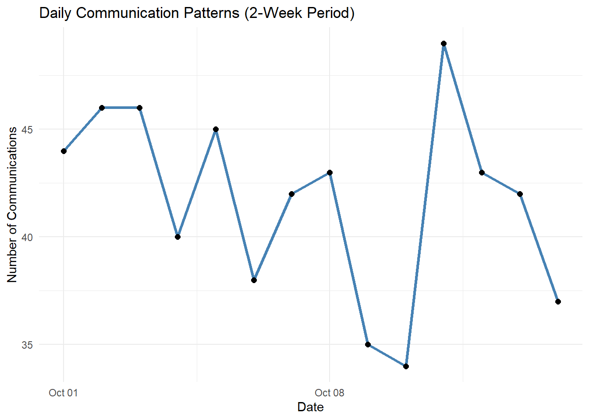

Code
pacman::p_load(tidyverse, jsonlite, lubridate, ggraph, tidygraph, visNetwork)Replicate Take home 2 with teammates’s package # Set-up
pacman::p_load(tidyverse, jsonlite, lubridate, ggraph, tidygraph, visNetwork)# Load graph structure
MC3 <- fromJSON("TH03/data/MC3_graph.json")
MC3_schema <- fromJSON("TH03/data/MC3_schema.json")
mc3_nodes <- as_tibble(MC3$nodes)
mc3_edges <- as_tibble(MC3$edges)glimpse(MC3)List of 5
$ directed : logi TRUE
$ multigraph: logi FALSE
$ graph :List of 4
..$ mode : chr "static"
..$ edge_default: Named list()
..$ node_default: Named list()
..$ name : chr "VAST_MC3_Knowledge_Graph"
$ nodes :'data.frame': 1159 obs. of 31 variables:
..$ type : chr [1:1159] "Entity" "Entity" "Entity" "Entity" ...
..$ label : chr [1:1159] "Sam" "Kelly" "Nadia Conti" "Elise" ...
..$ name : chr [1:1159] "Sam" "Kelly" "Nadia Conti" "Elise" ...
..$ sub_type : chr [1:1159] "Person" "Person" "Person" "Person" ...
..$ id : chr [1:1159] "Sam" "Kelly" "Nadia Conti" "Elise" ...
..$ timestamp : chr [1:1159] NA NA NA NA ...
..$ monitoring_type : chr [1:1159] NA NA NA NA ...
..$ findings : chr [1:1159] NA NA NA NA ...
..$ content : chr [1:1159] NA NA NA NA ...
..$ assessment_type : chr [1:1159] NA NA NA NA ...
..$ results : chr [1:1159] NA NA NA NA ...
..$ movement_type : chr [1:1159] NA NA NA NA ...
..$ destination : chr [1:1159] NA NA NA NA ...
..$ enforcement_type : chr [1:1159] NA NA NA NA ...
..$ outcome : chr [1:1159] NA NA NA NA ...
..$ activity_type : chr [1:1159] NA NA NA NA ...
..$ participants : int [1:1159] NA NA NA NA NA NA NA NA NA NA ...
..$ thing_collected :'data.frame': 1159 obs. of 2 variables:
.. ..$ type: chr [1:1159] NA NA NA NA ...
.. ..$ name: chr [1:1159] NA NA NA NA ...
..$ reference : chr [1:1159] NA NA NA NA ...
..$ date : chr [1:1159] NA NA NA NA ...
..$ time : chr [1:1159] NA NA NA NA ...
..$ friendship_type : chr [1:1159] NA NA NA NA ...
..$ permission_type : chr [1:1159] NA NA NA NA ...
..$ start_date : chr [1:1159] NA NA NA NA ...
..$ end_date : chr [1:1159] NA NA NA NA ...
..$ report_type : chr [1:1159] NA NA NA NA ...
..$ submission_date : chr [1:1159] NA NA NA NA ...
..$ jurisdiction_type: chr [1:1159] NA NA NA NA ...
..$ authority_level : chr [1:1159] NA NA NA NA ...
..$ coordination_type: chr [1:1159] NA NA NA NA ...
..$ operational_role : chr [1:1159] NA NA NA NA ...
$ edges :'data.frame': 3226 obs. of 5 variables:
..$ id : chr [1:3226] "2" "3" "5" "3013" ...
..$ is_inferred: logi [1:3226] TRUE FALSE TRUE TRUE TRUE TRUE ...
..$ source : chr [1:3226] "Sam" "Sam" "Sam" "Sam" ...
..$ target : chr [1:3226] "Relationship_Suspicious_217" "Event_Communication_370" "Event_Assessment_600" "Relationship_Colleagues_430" ...
..$ type : chr [1:3226] NA "sent" NA NA ...mc3_nodes_cleaned <- mc3_nodes %>%
mutate(id = as.character(id)) %>%
filter(!is.na(id)) %>%
distinct(id, .keep_all = TRUE) %>%
select(-thing_collected)
mc3_edges_cleaned <- mc3_edges %>%
rename(from_id = source,
to_id = target) %>%
mutate(across(c(from_id, to_id), as.character)) %>%
filter(from_id %in% mc3_nodes_cleaned$id,
to_id %in% mc3_nodes_cleaned$id) %>%
filter(!is.na(from_id), !is.na(to_id))
node_index_lookup <- mc3_nodes_cleaned %>%
mutate(.row_id = row_number()) %>%
select(id, .row_id)
mc3_edges_indexed <- mc3_edges_cleaned %>%
left_join(node_index_lookup, by = c("from_id" = "id")) %>%
rename(from = .row_id) %>%
left_join(node_index_lookup, by = c("to_id" = "id")) %>%
rename(to = .row_id) %>%
select(from, to, is_inferred, type) %>%
filter(!is.na(from) & !is.na(to))
used_node_indices <- sort(unique(c(mc3_edges_indexed$from, mc3_edges_indexed$to)))
mc3_nodes_final <- mc3_nodes_cleaned %>%
slice(used_node_indices) %>%
mutate(new_index = row_number())
old_to_new_index <- tibble(
old_index = used_node_indices,
new_index = seq_along(used_node_indices)
)
mc3_edges_final <- mc3_edges_indexed %>%
left_join(old_to_new_index, by = c("from" = "old_index")) %>%
rename(from_new = new_index) %>%
left_join(old_to_new_index, by = c("to" = "old_index")) %>%
rename(to_new = new_index) %>%
select(from = from_new, to = to_new, is_inferred, type)# Convert timestamp to datetime and extract date
comm_events <- mc3_nodes_final %>%
filter(type == "Event", sub_type == "Communication") %>%
select(id, timestamp)
# Step 2: Parse timestamp into datetime and extract the date
comm_events <- comm_events %>%
mutate(
start_time = ymd_hms(timestamp, quiet = TRUE),
day = as.Date(start_time)
)# Count number of communications per day
daily_comms <- comm_events %>%
count(day, name = "num_comms")# Plot as a time series
ggplot(daily_comms, aes(x = day, y = num_comms)) +
geom_line(color = "steelblue", linewidth = 1.2) +
geom_point(size = 2) +
labs(title = "Daily Communication Patterns (2-Week Period)",
x = "Date", y = "Number of Communications") +
theme_minimal()
# Filter relevant entity nodes
entity_nodes <- mc3_nodes_final %>%
filter(type == "Entity", sub_type %in% c("Person", "Vessel")) %>%
select(id, name, sub_type)entity_nodes <- entity_nodes %>%
mutate(
group = case_when(
name %in% c("Green Guardians", "Reef Guardian", "EcoVigil", "Sentinel") ~ "Environmentalism",
name %in% c("Sailor Shift", "Sailor Shifts Team") ~ "Sailor Shift",
name %in% c("Mariners Dream", "Marlin", "Recreational Fishing Boats") ~ "Fishing/Leisure",
name %in% c("Serenity", "Horizon", "Osprey", "Remora", "Neptune", "Mako") ~ "Tourism/Leisure",
TRUE ~ sub_type
)
)valid_ids <- entity_nodes$id
comm_event_ids <- mc3_nodes_final %>%
filter(type == "Event", sub_type == "Communication") %>%
pull(id)
# Use the cleaned edge indices and map back to node IDs
edge_lookup <- tibble(
index = mc3_nodes_final$new_index,
id = mc3_nodes_final$id
)
mc3_edges_for_events <- mc3_edges_final %>%
left_join(edge_lookup, by = c("from" = "index")) %>%
rename(from_id = id) %>%
left_join(edge_lookup, by = c("to" = "index")) %>%
rename(to_id = id)
sent_edges <- mc3_edges_for_events %>%
filter(type == "sent", to_id %in% comm_event_ids) %>%
select(event_id = to_id, entity_id = from_id)
received_edges <- mc3_edges_for_events %>%
filter(type == "received", from_id %in% comm_event_ids) %>%
select(event_id = from_id, entity_id = to_id)
entity_event_edges <- bind_rows(sent_edges, received_edges)
entity_pairs <- entity_event_edges %>%
inner_join(entity_event_edges, by = "event_id") %>%
filter(entity_id.x != entity_id.y) %>%
distinct(entity_id.x, entity_id.y) %>%
rename(source = entity_id.x, target = entity_id.y) %>%
filter(source %in% valid_ids & target %in% valid_ids)graph_tbl <- tbl_graph(nodes = entity_nodes, edges = entity_pairs, directed = FALSE)
graph_tbl <- graph_tbl %>%
mutate(cluster = as.factor(group_infomap()))ggraph(graph_tbl, layout = "fr") +
geom_edge_link(alpha = 0.2) +
geom_node_point(aes(color = group, shape = sub_type), size = 4) +
geom_node_text(aes(label = name), repel = TRUE, size = 2.5) +
labs(title = "Entity Communication Network: People and Vessels",
color = "Group", shape = "Type") +
theme_minimal()
# ---- NODES PREPARATION ----
nodes_vis <- graph_tbl %>%
activate(nodes) %>%
as_tibble() %>%
mutate(
id = as.character(id), # Ensure character type
label = name,
group = group,
shape = ifelse(sub_type == "Person", "dot", "triangle"),
title = paste0(
"<div style='color:white;'>", # Changed text color to white
"<b>", name, "</b><br>",
"Type: ", sub_type, "<br>",
"Group: ", group,
"</div>"
)
) %>%
select(id, label, group, shape, title)
# ---- EDGES PREPARATION ----
node_id_map <- graph_tbl %>%
activate(nodes) %>%
as_tibble() %>%
mutate(node_index = row_number()) %>%
select(node_index, id)
edges_vis <- graph_tbl %>%
activate(edges) %>%
as_tibble() %>%
left_join(node_id_map, by = c("from" = "node_index")) %>%
rename(from_id = id) %>%
left_join(node_id_map, by = c("to" = "node_index")) %>%
rename(to_id = id) %>%
select(from = from_id, to = to_id)
# ---- INTERACTIVE VISUALIZATION ----
visNetwork(nodes_vis, edges_vis, width = "100%", height = "800px") %>%
visIgraphLayout(layout = "layout_with_fr") %>%
visNodes(
font = list(size = 18, color = "black"),
shadow = list(enabled = TRUE, size = 10)
) %>%
visEdges(
color = list(color = "rgba(100,100,100,0.5)", highlight = "red"),
smooth = FALSE
) %>%
visInteraction(
tooltipStyle = 'position: fixed; visibility: hidden; padding: 8px;
font-family: verdana; font-size:14px; color: white;
background-color: black; border-radius: 5px;
border: 1px solid #444; box-shadow: 3px 3px 10px rgba(0, 0, 0, 0.5);
max-width: 300px; word-break: break-word;'
) %>%
visOptions(
highlightNearest = list(enabled = TRUE, degree = 1),
nodesIdSelection = TRUE,
selectedBy = "group"
) %>%
visLegend(
position = "right",
main = "Group Legend",
useGroups = TRUE
) %>%
visGroups(groupname = "Environmentalism", color = "#4DAF4A") %>%
visGroups(groupname = "Sailor Shift", color = "#E41A1C") %>%
visGroups(groupname = "Fishing/Leisure", color = "#377EB8") %>%
visGroups(groupname = "Tourism/Leisure", color = "#FFD700") %>%
visGroups(groupname = "Vessel", color = "#A65628") %>%
visGroups(groupname = "Person", color = "#984EA3")